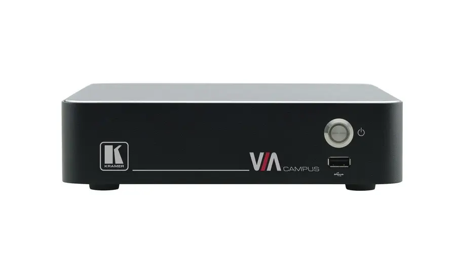

Серия Kramer VIA Campus
Флагманская серия систем совместной работы VIA Campus позволяет нескольким людям совместно работать с документами с помощью собственных устройств. Изображение на большом экране дублируется на экранах персональных устройств участников. При этом каждый из них может вывести на экран документ, продемонстрировать экран своего устройства или оставить комментарий в реальном времени. Система поддерживает свыше 250 одновременных подключений и до 12 устройств, одновременно выводящих контент на один или два спаренных экрана. С системой VIA Campus эффективность рабочих совещаний, тренингов или семинаров возрастает многократно. А модификации VIA Campus 2 и VIA Campus Plus еще больше расширяют возможности совместной работы.